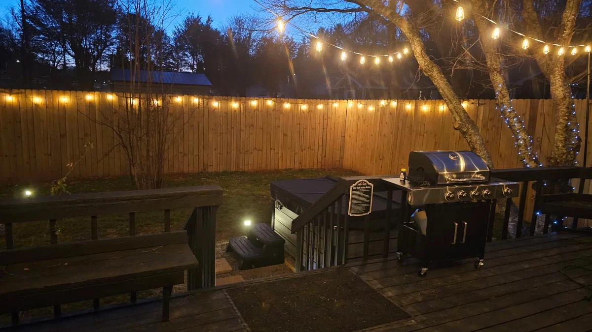
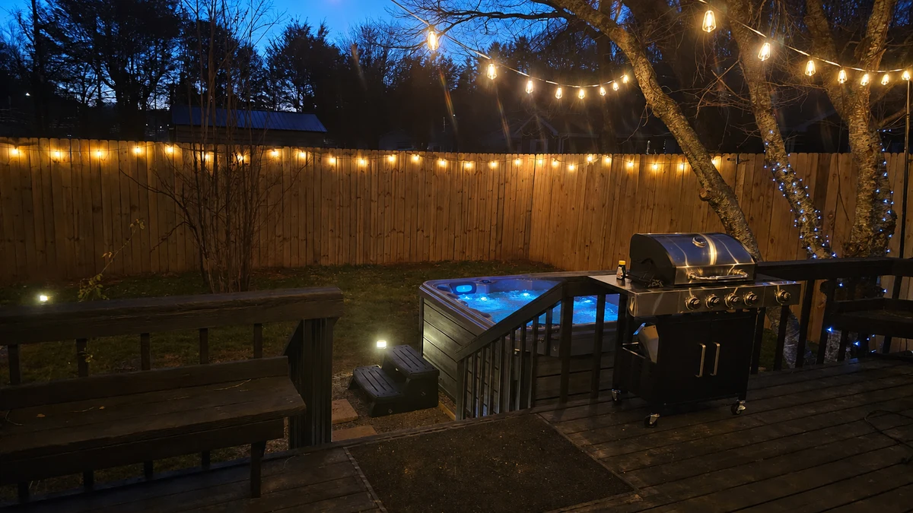
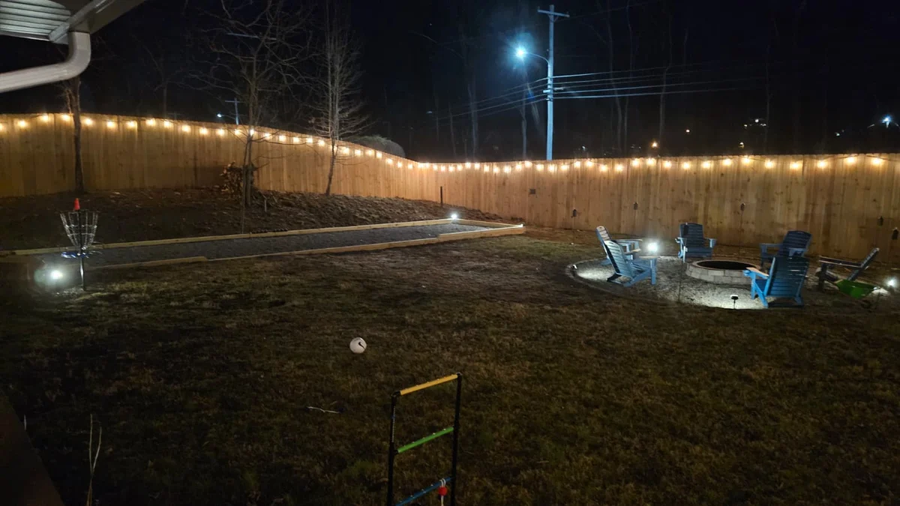
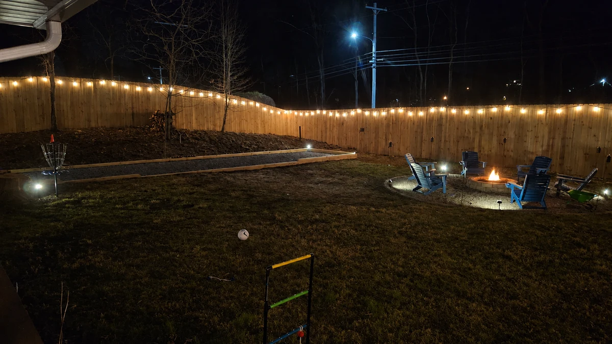
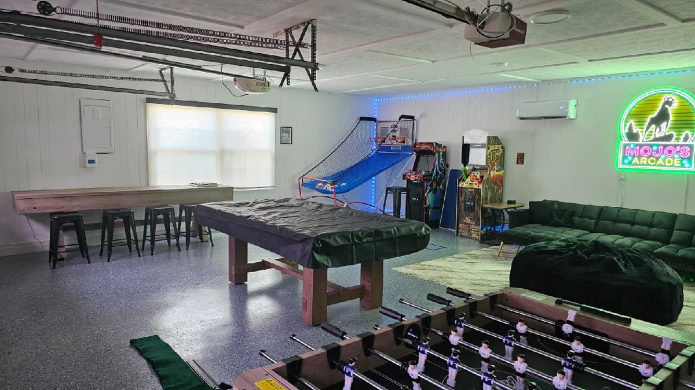

BEFORE Current-source snapshotOpen ↗
A NEW FIRST IMPRESSION
Same Manor.
A more compelling invitation.
A complete homepage revision built around your real home, stronger photography and a shorter path to checking dates.
REVIEW BRANCH · NOT PUBLISHED01
Let the home make the first impression.
The furnished front living room leads. The headline has its own quiet space, and Mojo becomes a small signature crest instead of passing across the copy.
Why: guests can see the quality of the actual house and understand its location before deciding to explore.
AFTER Working redesignOpen ↗
Choose a section to line up the comparison. Each pane scrolls independently; use “Open” to explore at full size. The before view uses the source captured at the start of this redesign.
WHAT CHANGED, AND WHY
A more considered guest journey.
More room for the house.
Warm ivory, deep green, bronze and editorial typography. Fewer competing shapes and repeated grids. A small, gently responsive Mojo crest keeps the brand’s personality.
The intended effect: a coherent boutique-hospitality impression, with the real property doing most of the work.
Give every image a job.
L017 leads; the kitchen island supports; bedroom choices stay. A 19-photo opening tour groups living, bedrooms, play, outdoors and arrival. Original property images remain accessible.
The intended effect: faster understanding of the stay, fewer weak repeats and a more truthful sense of the house.
Dates are always close.
Opening-screen, header and mobile booking actions open one date-search window using the existing Lodgify configuration. A direct-provider link remains available if the widget cannot load.
The intended effect: less scrolling before checking availability. Fees and terms still come from the booking engine.
Own the in-town advantage.
“Mountain days. Manor nights.” clearly pairs nearby adventures with a home in a residential neighborhood, one mile from downtown. Actual exterior photography establishes the setting.
The intended effect: attract guests who want both convenience and a memorable house, with expectations that match arrival.
A clearer, healthier foundation.
Updated title, description and share image; meaningful headings, real image elements, responsive sizes, working gallery sources and an accurate guide-page schema. Existing article URLs and GVR redirect remain.
The intended effect: improve content clarity and image delivery. This review build remains noindex and has not changed Google’s live results.
Make the elegant version usable.
Keyboard-operable photo filters, native dialogs, visible focus, reduced-motion support, mobile navigation and persistent mobile booking access. The heavy spinning-hero libraries are removed from the new homepage.
The intended effect: fewer distractions and more predictable interactions. No speed score or conversion uplift is claimed.
THE NEXT PHOTO SHOOT, VISUALIZED
Real setting. Generated finishing touches.
These three edited images are placeholders you requested. They demonstrate the open blue-lit hot tub, a lit fire pit and an uncovered pool table. The unseen spa interior and table details are inferred, so confirm them against the real property before any public use.


ORIGINALAI CONCEPTBlue lighting is owner-confirmed. Open water, jets and the hidden tub interior are generated.


ORIGINALAI CONCEPTThe actual backyard is retained. Flames and their local glow are generated.

 ORIGINALAI CONCEPT
ORIGINALAI CONCEPTThe table surface and balls are inferred. Compare its materials and proportions with the real table.
CLEAR ABOUT WHAT IS DONE
Built for review.
Ready for your eye.
Implemented in this branch: complete homepage, responsive styling, photo tour, date-search modal, concept-image treatments, photo repairs and selected SEO fixes.
Not done: production deployment, real replacement photography, a confirmed paid-booking test or measured conversion improvements. The review build has noindex and disables homepage analytics outside the real production hostname.
Read the implementation and validation notes ↗Author: Codex Astra 6 · branch codex/mojo-manor-homepage-review